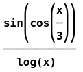

Copy, Paste, and Special Copy Options#
There are many options for copying program data to the clipboard. One of the goals of this program is to make it as easy as possible to integrate this package with other standard software systems. The main copy and paste options for the CAS are Copy, Paste, Copy as LaTeX, and the Special Copy submenu of the main program menu. Many of these options have a corresponding toolbar button to make their selection quick and easy.
Copy#
This will copy the currently selected object to the clipboard using the program syntax for the object.
Paste#
This will paste the contents of the clipboard to a new CAS item. It is assumed that the clipboard contents contain correct program syntax.
Copy as LaTeX#
This will copy the LaTeX code for the currently selected object to the clipboard. These can then be pasted into your favorite LaTeX editor or text editor to then be compiled by the LaTeX composer. For example, the CAS entry,
would be copied as
\frac{\sin{\left(\cos{\left(\frac{x}{3} \right)} \right)}}{\ln{\left(x \right)}}
and the entry
would be copied as
\left[\begin{array}{ccc}\cos{\left(a \right)} & 0 & \sin{\left(a \right)}\\0 & 1 & 0\\- \sin{\left(a \right)} & 0 & \cos{\left(a \right)}\end{array}\right]
Special Copy#
The Special Copy submenu contains options for special formatting of CAS objects. This is in hopes that whatever system these copies will be pasted into will require little to no extra editing.
Copy Workspace as LaTeX#
All the options in this menu work only on the currently selected item except for this one. This option will convert the entire CAS workspace into one LaTeX output. The descriptions are put in as verbatim environments and the mathematical code is placed in displayed equation delimiters. Note that error entries in the CAS are skipped in this copy.
Copy as Text#
The CAS workspace entries are displayed in what is called a pretty print format that is produced by SymPy. This is just a plain text format that is broken up line by line and includes some Unicode characters to make the presentation more mathematical in style and easier for the user to read. The catch here is that to display this correctly the font that is being used must be a mono-spaced font, that is, all characters use the same amount of horizontal space, which is not the case for most fonts. This is why if you go into the preferences to change the display font you only get a few choices and they are all mono-spaced.
This copy will simply copy the pretty print text to the clipboard. When this is pasted into a word processor the font around the text will most likely need to be changed to a mono-spaced font.
Copy as Mathematical Code#
This will copy the item to a mathematical format similar to the SymPy syntax.
Copy Matrix to Tab Delimited#
This is intended for matrices. It will copy the matrix using a tab-delimited format that can be paste into most word processors.
Copy as Image#
This will copy the current item to an image. If you are not using LaTeX to format your documents and using a standard word processor this may be a good way to get readable mathematics into your document without using the equation editors in the word processor.
For example,
would look like,

Copy as Image with Padding#
This is the same as the Copy as Image option but it allows the user to add some extra padding around the text. In some cases the automatic calculation of the minimal height and width of the image is a little off. This is usually due to the use of Unicode characters in the expression (e and i and a few others) since their font metrics are a little off of where they need to be. In these cases you may see lines wrapping within the image where they are not supposed to. If this happens select this option and input some extra padding width and height in the dialog box that appears.
Copy as MathML#
This will copy the current object to MathML code. For example,
would copy to,
<apply><divide/><apply><sin/><apply><cos/><apply><divide/><ci>x</ci><cn>3</cn></apply></apply></apply><apply><ln/><ci>x</ci></apply></apply>
Copy as GeoGebra#
This will copy the currently selected expression to GeoGebra code. Not everything will copy in seamlessly, in particular, piecewise defined functions. It does its best on expressions and matrices in the hopes that there will be a little editing as possible once pasted into GeoGebra.
For example,
would copy to, sin(cos(x/3))/ln(x), which is correct syntax.
would copy to, {{cos(a),0,sin(a)},{0,1,0},{-sin(a),0,cos(a)}}, which is also correct syntax.
Copy as Maxima#
This will copy the currently selected expression to Maxima code. Not everything will copy in seamlessly, in particular, piecewise defined functions. It does its best on expressions and matrices in the hopes that there will be a little editing as possible once pasted into Maxima.
For example,
would copy to, sin(cos(x/3))/log(x), which is correct syntax.
would copy to, matrix([cos(a),0,sin(a)],[0,1,0],[-sin(a),0,cos(a)]), which is also correct syntax.
Copy as SageMath#
This will copy the currently selected expression to SageMath code. Not everything will copy in seamlessly, in particular, piecewise defined functions. It does its best on expressions and matrices in the hopes that there will be a little editing as possible once pasted into SageMath.
For example,
would copy to, sin(cos(x/3))/log(x), which is correct syntax.
would copy to, matrix([[cos(a),0,sin(a)],[0,1,0],[-sin(a),0,cos(a)]]), which is also correct syntax. A note to Sage users, the matrix domain is ignored here.
Copy (…) Delimited#
This is intended for matrices. For example,
would copy to, ((cos(a),0,sin(a)),(0,1,0),(-sin(a),0,cos(a))).
Copy […] Delimited#
This is intended for matrices. For example,
would copy to, [[cos(a),0,sin(a)],[0,1,0],[-sin(a),0,cos(a)]].
Copy {…} Delimited#
This is intended for matrices. For example,
would copy to, {{cos(a),0,sin(a)},{0,1,0},{-sin(a),0,cos(a)}}.
Copy <…> Delimited#
This is intended for matrices. For example,
would copy to, <<cos(a),0,sin(a)>,<0,1,0>,<-sin(a),0,cos(a)>>.
Copy Description#
This option simply copies the description of the currently selected item to the clipboard.